org-special-block-extras
Warning: Incomplete!
Abstract
The aim is to write something once using Org-mode markup then generate the markup for multiple backends. That is, write once, generate many!
In particular, we are concerned with ‘custom’, or ‘special’, blocks which delimit how a particular region of text is supposed to be formatted according to the possible export backends. In some sense, special blocks are meta-blocks. Rather than writing text in, say, LaTeX environments using LaTeX commands or in HTML
div's using HTML tags, we promote using Org-mode markup in special blocks —Org markup cannot be used explicitly within HTML or LaTeX environments.Consequently, we extend the number of block types available to the Emacs Org-mode user without forcing the user to learn HTML or LaTeX. Indeed, I am not a web developer and had to learn a number of HTML concepts in the process —the average Org user should not have to do so.
Similarly, we provide a number of ‘link types’
[[linktype:label][description]]for producing in-line coloured text and SVG “badges”.We begin with the first two sections serving as mini-tutorials on special blocks and on link types. The special block setup we use is extensible in that a new block named
𝒞will automatically be supported if the user defines a functionorg-special-block-extras--𝒞that formats the text of a block. *The remaining sections are literate implementation matter, along with examples and screenshots.*In summary, we provide 20 colour block types and 20 colour link types, an ‘editor comment’ block type as well as a link type, a ‘details’ block type, a ‘parallel’ multiple columns view block type, a ‘link here’ link type, 8 badge link types, and block and link types for making documentation-glossary entries. That is, we provide 29 block types and 32 link types.
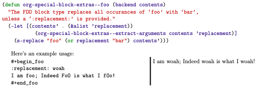
Figure 1: Extensibility! Plug and play support for new block types!
First, a gallery of what's possible!
| Write Org-markup once, generate for many backends ^_^ |
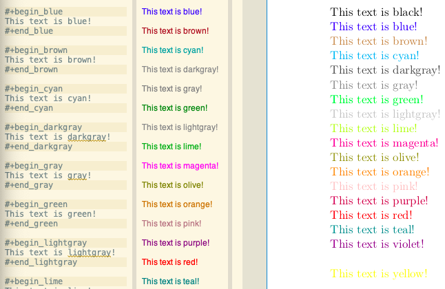
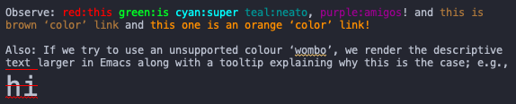
| Displaying thoughts side-by-side ^_^ |

| “First-class editor comments” In order: Chrome, Emacs Web Wowser, Org source, PDF |
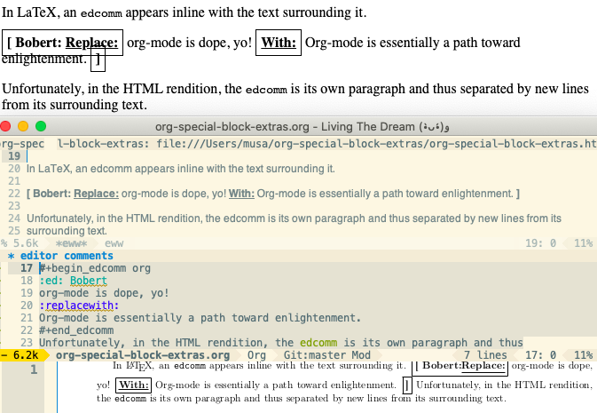
| Visually hiding, folding away, details |
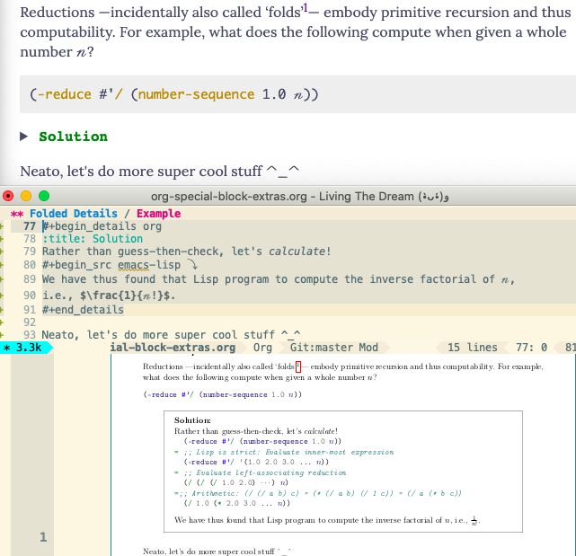
| An Emacs interface to https://shields.io/ |
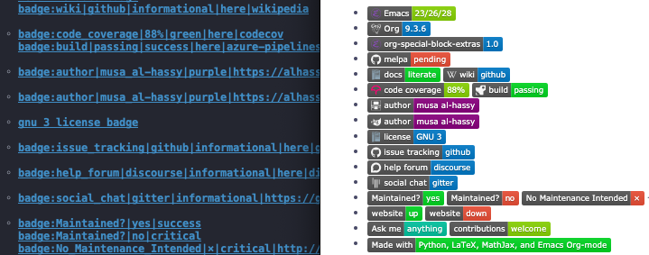
| Tooltips for documentation and glossary items –in the browser! |
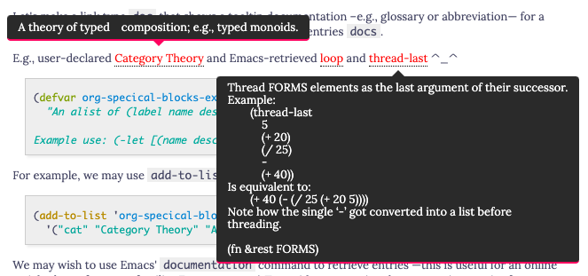
| Tooltips for documentation and glossary items –in Emacs! |
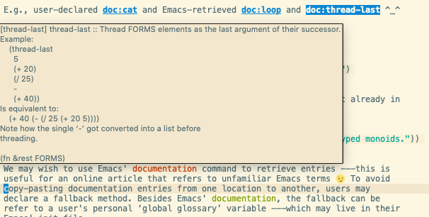
| Tooltips for documentation and glossary items –in the PDF! |
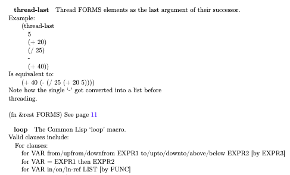
| Declaring documentation-glossary items |
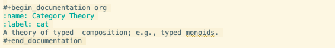
The full article may be read as a PDF or as HTML or as pure Org! —or visit the repo.
Table of Contents
1 How do I make a new special block? —Core Utility
An Org mode block is a region of text surrounded by #+BEGIN_𝒳 … #+END_𝒳; they
serve various purposes as summarised in the table below. However, we shall
use such blocks to execute arbitrary code on their contents.
| 𝒳 | Description |
|---|---|
example |
Format text verbatim, leaving markup as is |
src |
Format source code |
center |
Centre text |
quote |
Format text as a quotation |
tiny |
Render text in a small font; likewise footnotesize |
comment |
Completely omit the text from export |
- They can be folded and unfolded in Emacs by pressing TAB in the
#+BEGINline. - The contents of blocks can be highlighted as if they were of language ℒ such
as
org, html, latex, haskell, lisp, python, …by writing#+BEGIN_𝒳 ℒon the starting line, where𝒳is the name of the block type. - You can ‘zoom in temporarily’, narrowing your focus to only on a particular
block, with
org-narrow-to-element,C-x n e, to make your window only show the block. Then useC-x n wto widen your vision of the buffer's contents.
1.1 What is a special block?
Our goal is to turn Org blocks into LaTeX environments and HTML divs.
Why not use LaTeX or HTML environments directly?
- Can no longer use Org markup in such settings.
- Committed to one specific export type.
#+begin_𝒳 I /love/ Emacs! #+end_𝒳
Exports to LaTeX as:
\begin{𝒳} I \emph{love} Emacs! \end{𝒳}
Exports to HTML as:
<div class="𝒳"> I <em>love</em> Emacs! </div>
Notice that the standard org markup is also translated according to the export type.
If the 𝒳 environment exists in a backend —e.g., by some \usepackage{⋯} or
manually with
\newenvironment{𝒳}{⋯}{⋯} in LaTeX— then the file will compile
without error. Otherwise, you need to ensure it exists —e.g., by defining the
backend formatting manually yourself.
[ Aside:
LaTeX packages that a user needs consistently are declared in the
list org-latex-packages-alist. See its documentation, with C-h o,
to learn more. To export to your own LaTeX classes, C-h o org-latex-classes.
]
A div tag defines a division or a section in an HTML document that is styled in
a particular fashion or has JavaScript code applied to it. For example
—placing the following in an #+begin_export html ⋯ #+end_export— results in
a section of text that is editable by the user —i.e., one can just alter text
in-place— and its foreground colour is red, while its background colour is
light blue, and it has an uninformative tooltip.
<div contenteditable="true" title="woah, a tool tip!" style="color:red; background-color:lightblue"> This is some text! </div>
To use a collection of style settings repeatedly, we may declare them in a class
—which is just a an alias for the ;-separated list of attribute:value
pairs. Then our div's refer to that particular class name.
red.
#+begin_export html
<style>
.red { color:red; }
</style>
#+end_export
Now, the above syntax with 𝒳 replaced by red works as desired in HTML export.
I love Emacs!
This, however, will not work if we want to produce LaTeX and so requires a duplication of efforts. We will declare such formatting once for each backend.
1.2 Core Utility
The simplest route is to ‘advise’ —i.e., function patch or overload— the Org
export utility for special blocks to consider calling a method
org-special-block-extras--𝒳 whenever it encounters a special block named 𝒳.
(advice-add #'org-html-special-block :before-until (apply-partially #'org-special-block-extras--advice 'html)) (advice-add #'org-latex-special-block :before-until (apply-partially #'org-special-block-extras--advice 'latex))
Here is the actual advice:
(defun org-special-block-extras--advice (backend blk contents _) "Invoke the appropriate custom block handler, if any. A given custom block BLK has a TYPE extracted from it, then we send the block CONTENTS along with the current export BACKEND to the formatting function ORG-SPECIAL-BLOCK-EXTRAS--TYPE if it is defined, otherwise, we leave the CONTENTS of the block as is. We also support the seemingly useless blocks that have no contents at all, not even an empty new line." (let* ((type (nth 1 (nth 1 blk))) (handler (intern (format "org-special-block-extras--%s" type)))) (ignore-errors (apply handler backend (or contents "") nil))))
To support a new block named 𝒳:
- Define a function
org-special-block-extras--𝒳. - It must take two arguments:
backend⇒ A symbol such as'htmlor'latex,content⇒ The string contents of the special block.
- The function must return a string, possibly depending on the backend being exported to. The resulting string is inserted literally in the exported file.
- Test out your function as in
(org-special-block-extras--𝒳 'html "some input")—this is a quick way to find errors. - Enjoy ^_^
If no such function is defined, we export 𝒳 blocks using the default
mechanism, as discussed earlier, as a LaTeX environment or an HTML div.
An example is provided at the end of this section.
Of-course, when the user disables our mode, then we remove such advice.
(advice-remove #'org-html-special-block (apply-partially #'org-special-block-extras--advice 'html)) (advice-remove #'org-latex-special-block (apply-partially #'org-special-block-extras--advice 'latex))
1.3 :argument: Extraction
As far as I can tell, there is no way to provide arguments to special blocks.
As such, the following utility looks for lines of the form :argument: value
within the contents of a block and returns an updated contents string that no
longer has such lines followed by an association list of such argument-value
pairs.
(defun org-special-block-extras--extract-arguments (contents &rest args) "Get list of CONTENTS string with ARGS lines stripped out and values of ARGS. Example usage: (-let [(contents′ . (&alist 'k₀ … 'kₙ)) (…extract-arguments contents 'k₀ … 'kₙ)] body) Within ‘body’, each ‘kᵢ’ refers to the ‘value’ of argument ‘:kᵢ:’ in the CONTENTS text and ‘contents′’ is CONTENTS with all ‘:kᵢ:’ lines stripped out. + If ‘:k:’ is not an argument in CONTENTS, then it is assigned value NIL. + If ‘:k:’ is an argument in CONTENTS but is not given a value in CONTENTS, then it has value the empty string." (let ((ctnts contents) (values (cl-loop for a in args for regex = (format ":%s:\\(.*\\)" a) for v = (cadr (s-match regex contents)) collect (cons a v)))) (cl-loop for a in args for regex = (format ":%s:\\(.*\\)" a) do (setq ctnts (s-replace-regexp regex "" ctnts))) (cons ctnts values)))
For example, we use this feature to indicate when a column break should happen
in a parallel block and which person is making editorial remarks in an
edcomm block.
Why the :𝒳: notation? At the start of a line, a string of this form is coloured
—I don't recall why that is— and that's a good enough reason to make use of
such an existing support.
[ Aside:
In org-mode, ‘drawers’ are pieces of text that begin with
:my_drawer_name: on a line by itself and end with :end: on a line by itself, and
these delimiters allow us to fold away such regions and possibly exclude them
from export. That is, drawers act as a light-weight form of blocks. Anyhow, Org
colours drawer delimiters,
]
1.4 An Example Special Block ---foo
Herein we show an example function org-special-block-extras--𝒳 that makes use of
arguments. In a so-called foo block, all occurrences of the word foo are
replaced by bar unless the argument :replacement: is given a value.
(defun org-special-block-extras--foo (backend contents) "The FOO block type replaces all occurances of ‘foo’ with ‘bar’, unless a ‘:replacement:’ is provided." (-let [(contents′ . (&alist 'replacement)) (org-special-block-extras--extract-arguments contents 'replacement)] (s-replace "foo" (or replacement "bar") contents′)))
Here's an example usage:
I am woah; Indeed woah is what I woah!
See the implementation matter of edcomm or parallel for a more involved definition
that behaves differently depending on the export backend.
1.5 Next Steps
Going forward, it would be nice to have a set of switches that apply to all
special blocks. For instance, :ignore: to simply bypass the user-defined
behaviour of a block type, and :noexport: to zero-out a block upon export.
These are super easy to do —just need a few minutes to breath. It may also be
desirable to provide support for drawers, and to ‘fuse’ the block-type and
link-type approaches used here into one macro.
2 How do I make a new link type?
Use (org-link-set-parameters params) to add a new link type
—an older obsolete method is org-add-link-type.
The list of all supported link types is org-link-parameters;
its documentation identifies the possibilities for params.
Let's produce an example link type, then discuss its code.
Intended usage: Raw use salam and descriptive, using ‘example’ link type ^_^ 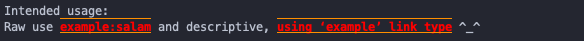
1: (org-link-set-parameters 2: ;; The name of the new link type, usage: “example:label” 3: "example" 4: 5: ;; When you click on such links, “let me google that for you” happens 6: :follow (lambda (label) (browse-url (concat "https://lmgtfy.com/?q=" label))) 7: 8: ;; Upon export, make it a “let me google that for you” link 9: :export (lambda (label description backend) 10: (format (pcase backend 11: ('html "<a href=\"%s\">%s</a>") 12: ('latex "\\href{%s}{%s}") 13: (_ "I don’t know how to export that!")) 14: (concat "https://lmgtfy.com/?q=" label) 15: (or description label))) 16: 17: ;; These links should *never* be folded in descriptive display; 18: ;; i.e., “[[example:lable][description]]” will always appear verbatim 19: ;; and not hide the first pair […]. 20: ;; :display 'full 21: 22: ;; The tooltip alongside a link 23: :help-echo (lambda (window object position) 24: (save-excursion 25: (goto-char position) 26: (-let* (((&plist :path :format :raw-link :contents-begin :contents-end) 27: (cadr (org-element-context))) 28: ;; (org-element-property :path (org-element-context)) 29: (description 30: (when (equal format 'bracket) 31: (copy-region-as-kill contents-begin contents-end) 32: (substring-no-properties (car kill-ring))))) 33: (format "“%s” :: Let me google “%s” for you -__-" 34: (or description raw-link) (pp window))))) 35: 36: ;; How should these links be displayed 37: :face '(:foreground "red" :weight bold 38: :underline "orange" :overline "orange"))
- Line 3
"example" Add a new
examplelink type.- If the type already exists, update it with the given arguments.
The syntax for a raw link is
example:pathand for the bracketed descriptive form[[example:path][description]].- Some of my intended uses for links including colouring text and doing nothing else, as such the terminology ‘path’ is not sufficiently generic and so I use the designation ‘label’ instead.
- Line 6
:follow What should happen when a user clicks on such links?
This is a function taking the link path as the single argument and does whatever is necessary to “follow the link”, for example find a file or display a message. In our case, we open the user's browser and go to a particular URL.
- Line 9
:export How should this link type be exported to HTML, LaTeX, etc?
This is a three-argument function that formats the link according to the given backend, the resulting string value os placed literally into the exported file. Its arguments are:
label⇒ the path of the link, the text after the link type prefixdescription⇒ the description of the link, if anybackend⇒ the export format, a symbol likehtmlorlatexorascii.
In our example above, we return different values depending on the
backendvalue.- If
:exportis not provided, default Org-link exportation happens.
- Line 20
:display - Should links be prettily folded away when a description is provided?
- Line 23
:help-echo What should happen when the user's mouse is over the link?
This is either a string or a string-valued function that takes the current window, the current buffer object, and its position in the current window.
In our example link, we go to the position of the object, destructure the Org link's properties using
-let, find the description of the link, if any, then provide a string based on the link's path and description.help-echois a general textual propertyWe may use
help-echoto attach tooltips to arbitrary text in a file, as follows. I have found this to be useful in metaprogramming to have elaborated, generated, code shown as a tooltip attached to its named specification.;; Nearly instantaneous display of tooltips. (setq tooltip-delay 0) ;; Give user 30 seconds before tooltip automatically disappears. (setq tooltip-hide-delay 300) (defun tooltipify (phrase notification &optional underline) "Add a tooltip to every instance of PHRASE to show NOTIFICATION. We only add tooltips to PHRASE as a standalone word, not as a subword. If UNDERLINE is provided, we underline the given PHRASE so as to provide a visual clue that it has a tooltip attched to it. The PHRASE is taken literally; no regexp operators are recognised." (assert (stringp phrase)) (assert (stringp notification)) (save-excursion ;; Return cursour to current-point afterwards. (goto-char 1) ;; The \b are for empty-string at the start or end of a word. (while (search-forward-regexp (format "\\b%s\\b" (regexp-quote phrase)) (point-max) t) ;; (add-text-properties x y ps) ;; ⇒ Override properties ps for all text between x and y. (add-text-properties (match-beginning 0) (match-end 0) (list 'help-echo (s-trim notification))))) ;; Example use (tooltipify "Line" "A sequential formatation of entities or the trace of a particle in linear motion")
Useful info on tooltips:
- Line 37
:face What textual properties do these links possess?
This is either a face or a face-valued function that takes the current link's path label as the only argument. That is, we could change the face according to the link's label —which is what we will do for the
colorlink type as in[[color:brown][hello]]will be rendered in brown text.- If
:faceis not provided, the default underlined blue face for Org links is used. - Learn more about faces!
- If
- More
- See
org-link-parametersfor documentation on more parameters.
3 Colours
Let's develop blocks for colouring text and link types for inline colouring.
- Use
M-x list-colors-displayto see a list of defined colour names in Emacs —see xcolor for the LaTeX side and htmlcolorcodes.com for the HTML side, or just visit http://latexcolor.com/ for both.
3.1 org-special-block-extras--𝒞 where 𝒞 ∈ org-special-block-extras--colors
We declare a list of colors that should be available on most systems. Then using this list, we evaluate the code necessary to produce the necessary functions that format special blocks.
By default, Org uses the graphicx LaTeX package which let's us colour text
—see its documentation here. For example, in an #+begin_export latex block,
the following produces blue coloured text.
{ \color{blue} This is a sample text in blue. }
Below, we format colour block types to essentially format block contents like this.
(defvar org-special-block-extras--colors '(black blue brown cyan darkgray gray green lightgray lime magenta olive orange pink purple red teal violet white yellow) "Colours that should be available on all systems.") (cl-loop for colour in org-special-block-extras--colors do (eval (read (format "(defun org-special-block-extras--%s (backend contents) (format (pcase backend (`latex \"\\\\begingroup\\\\color{%s}%%s\\\\endgroup\\\\,\") (_ \"<span style=\\\"color:%s;\\\">%%s</span>\")) contents))" colour colour colour))))
For faster experimentation between colours, we provide a generic color block
that consumes a :color: argument.
(defun org-special-block-extras--color (backend contents) "Format CONTENTS according to the ‘:color:’ they specify for BACKEND." (-let* (((contents′ . (&alist 'color)) (org-special-block-extras--extract-arguments contents 'color)) (block-coloring (intern (format "org-special-block-extras--%s" (s-trim color))))) (if (member (intern (s-trim color)) org-special-block-extras--colors) (funcall block-coloring backend contents′) (error "Error: “#+begin_color:%s” ⇒ Unsupported colour!" color))))
For example:
Hello, friends!
3.2 Block Examples
This text is black!
This text is blue!
This text is brown!
This text is cyan!
This text is darkgray!
This text is gray!
This text is green!
This text is lightgray!
This text is lime!
This text is magenta!
This text is olive!
This text is orange!
This text is pink!
This text is purple!
This text is red!
This text is teal!
This text is violet!
This text is white!
This text is yellow!
3.3 Colour Link Types
We want the syntax red:text to render ‘text’ with the colour red
in both the Emacs interface and in exported backends.
;; [[𝒞:text₀][text₁]] ⇒ Colour ‘textₖ’ by 𝒞, where k is 1, if present, otherwise 0. ;; If text₁ is present, it is suggested to use ‘color:𝒞’, defined below. (cl-loop for colour in org-special-block-extras--colors do (org-link-set-parameters (format "%s" colour) :follow `(lambda (path) (message "Colouring “%s” %s." path (quote ,colour))) :export `(lambda (label description backend) (-let [block-colouring (intern (format "org-special-block-extras--%s" (quote ,colour)))] (funcall block-colouring backend (or description label)))) :face `(:foreground ,(format "%s" colour)))) ;; Generic ‘color’ link type [[color:𝒞][text]] ⇒ Colour ‘text’ by 𝒞. ;; If 𝒞 is an unsupported colour, ‘text’ is rendered in large font ;; and surrounded by red lines. (org-link-set-parameters "color" :follow (lambda (_)) :face (lambda (colour) (if (member (intern colour) org-special-block-extras--colors) `(:foreground ,(format "%s" colour)) `(:height 300 :underline (:color "red" :style wave) :overline "red" :strike-through "red"))) :help-echo (lambda (window object position) (save-excursion (goto-char position) (-let* (((&plist :path) (cadr (org-element-context)))) (if (member (intern path) org-special-block-extras--colors) "Colour links just colour the descriptive text" (format "Error: “color:%s” ⇒ Unsupported colour!" path))))) :export (lambda (colour description backend) (-let [block-colouring (intern (format "org-special-block-extras--%s" colour))] (if (member (intern colour) org-special-block-extras--colors) (funcall block-colouring backend description) (error "Error: “color:%s” ⇒ Unsupported colour!" colour)))))
Observe: this is super neato, amigos! and this is brown ‘color’ link and this one is an orange ‘color’ link!
Also: If we try to use an unsupported colour ‘wombo’, we render the descriptive
text larger in Emacs along with a tooltip explaining why this is the case;
e.g.,
[[color:wombo][hi]].
( Markdown does not support colour; go look at the HTML or PDF! )
3.4 Next Steps
Before indicating desirable next steps, let us produce an incidentally useful special block type.
We may use LaTeX-style commands such as {\color{red} x} by enclosing them in
$-symbols to obtain \({\color{red}x}\) and other commands to present mathematical
formulae in HTML. This is known as the MathJax tool —Emacs' default HTML
export includes it.
It is common to declare LaTeX definitions for convenience, but such
declarations occur within $-delimiters and thereby produce undesirable extra
whitespace. We declare the latex_definitions block type which avoids
displaying such extra whitespace in the resulting HTML.
(defun org-special-block-extras--latex-definitions (backend contents) "Declare but do not display the CONTENTS according to the BACKEND." (loop for (this that) in (-partition 2 '("<p>" "" "</p>" "" "\\{" "{" "\\}" "}")) do (setq contents (s-replace this that contents))) (format (pcase backend ('html "<p style=\"display:none\">\\[%s\\]</p>") (_ "%s")) contents))
Org escapes
{,}in LaTeX export, so we need to ‘unescape’ them. This is clearly a hack.Here is an example usage, where we declare
\LLto produce a violet left parenthesis. We then use these to produce an example of linear quantification notation —also known as Z-notation.\[ {\color{teal}\bigoplus} _{ {\color{violet} x} = {\color{red} a}} ^{\color{cyan} b} {\color{brown}{\,f\, x}} \quad=\quad {\color{brown}{f\,\LL {\color{red} a} \RR}} \;{\color{teal}\oplus}\; {\color{brown}{f \, \LL a + 1 \RR }} \;{\color{teal}\oplus}\; {\color{brown}{f \, \LL a + 2 \RR }} \;{\color{teal}\oplus}\; \cdots \;{\color{teal}\oplus}\; {\color{brown}{f \, \LL {\color{cyan} b} \RR}} \]
⊕ Loop sequentially with loop-bodies fused using ⊕ x Use x as the name of the current element a Start with x being a b End with x being b f x At each x value, compute f x
( Markdown does not support MathJax; go look at the HTML or PDF! )
Unfortunately, MathJax does not easily support arbitrary HTML elements to occur
within the $-delimiters —see this and this for ‘workarounds’. As such, the
MathJax producing the Z-notation example is rather ugly whereas its subsequent
explanatory table is prettier on the writer's side.
Going forward, it would be nice to easily have our colour links work within a mathematical special block.
Moreover, it would be nice to extend the color block type to take multiple
arguments, say, by a switch :colors: c₁ c₂ … cₙ such that:
| n | Behaviour |
|---|---|
| 0 | No colouring; likewise if :colors: is absent altogether |
| 1 | Colour all entries using the given colour c₁ |
| n | Paragraph –region separated by a new line– i is coloured by cₖ where k = i mod n |
Besides having a colourful article, another usage I envision for this generalisation would be when rendering text in multiple languages; e.g., use red and blue to interleave a Arabic poetry with its English translation.
4 Parallel
We want to be able to reduce the amount of whitespace noise in our articles, and
so use the parallel block to place ideas side-by-side —with up to the chosen
limit of 5 columns.
Figure 15: Displaying thoughts side-by-side ^_^ Top is browser, then Emacs, then PDF
#+LATEX_HEADER: \usepackage{multicol} |
I initially used the names parallel𝓃 but names ending with a number 𝓃 did not
inherit highlighting, so I shifted the number to being a prefix instead.
- For LaTeX, new lines are used to suggest opportunities for column breaks and are needed even if explicit columnbreaks are declared.
- Use the nullary switch
:columnbreak:to request a columnbreak; this has no effect on HTML export since HTML describes how text should be formatted on a browser, which can dynamically shrink and grow and thus it makes no sense to have hard columnbreaks. - We also provide
𝓃parallelNBfor users who want ‘N’o ‘B’ar separator between columns.
(cl-loop for cols in '("1" "2" "3" "4" "5") do (cl-loop for rule in '("solid" "none") do (eval (read (concat "(defun org-special-block-extras--" cols "parallel" (if (equal rule "solid") "" "NB") "(backend contents)" "(format (pcase backend" "(`html \"<div style=\\\"column-rule-style:" rule ";column-count:" cols ";\\\"%s</div>\")" "(`latex \"\\\\par \\\\setlength{\\\\columnseprule}{" (if (equal rule "solid") "2" "0") "pt}" " \\\\begin{minipage}[t]{\\\\linewidth}" " \\\\begin{multicols}{" cols "}" " %s" " \\\\end{multicols}\\\\end{minipage}\"))" "(s-replace \":columnbreak:\" (if (equal 'html backend) \"\" \"\\\\columnbreak\") contents)))")))))
We also use parallel as an alias for 2parallel.
(defalias #'org-special-block-extras--parallel #'org-special-block-extras--2parallel) (defalias #'org-special-block-extras--parallelNB #'org-special-block-extras--2parallelNB)
4.1 Example
#+begin_3parallel org one #+latex: \columnbreak two #+latex: \columnbreak three #+end_3parallel
Yields:
two
three
( The Emacs Web Wowser, M-x eww, does not display parallel environments as
desired. )
4.2 Next Steps
Going forward, it would be desirable to have the columns take a specified percentage of the available width —whereas currently it splits it uniformly. Such a feature would be useful in cases where one column is wide and the others are not.
5 Editor Comments
“Editor Comments” are intended to be top-level first-class comments in an article that are inline with the surrounding text and are delimited in such a way that they are visible but drawing attention. I first learned about this idea from Wolfram Kahl —who introduced me to Emacs many years ago.
In LaTeX, an edcomm appears inline with the text surrounding it.
[ Bobert: Replace: org-mode is dope, yo! With: Org-mode is essentially a path toward enlightenment. ]
Unfortunately, in the HTML rendition, the edcomm is its own paragraph and thus
separated by new lines from its surrounding text.
Figure 16: In order: Chrome, Emacs Web Wowser, Org source, PDF
Any new —possibly empty— inner lines in the edcomm are desirably preserved |
(defvar org-special-block-extras-hide-editor-comments nil "Should editor comments be shown in the output or not.") (defun org-special-block-extras--edcomm (backend contents) "Format CONTENTS as an first-class editor comment according to BACKEND. The CONTENTS string has two optional argument switches: 1. :ed: ⇒ To declare an editor of the comment. 2. :replacewith: ⇒ [Nullary] The text preceding this clause should be replaced by the text after it." (-let* ( ;; Get arguments ((contents₁ . (&alist 'ed)) (org-special-block-extras--extract-arguments contents 'ed)) ;; Strip out any <p> tags (_ (setq contents₁ (s-replace-regexp "<p>" "" contents₁))) (_ (setq contents₁ (s-replace-regexp "</p>" "" contents₁))) ;; Are we in the html backend? (html? (equal backend 'html)) ;; fancy display style (boxed (lambda (x) (if html? (concat "<span style=\"border-width:1px" ";border-style:solid;padding:5px\">" "<strong>" x "</strong></span>") (concat "\\fbox{\\bf " x "}")))) ;; Is this a replacement clause? ((this that) (s-split ":replacewith:" contents₁)) (replacement-clause? that) ;; There is a ‘that’ (replace-keyword (if html? " <u>Replace:</u>" "\\underline{Replace:}")) (with-keyword (if html? "<u>With:</u>" "\\underline{With:}")) (editor (format "[%s:%s" (if (s-blank? ed) "Editor Comment" ed) (if replacement-clause? replace-keyword ""))) (contents₂ (if replacement-clause? (format "%s %s %s" this (funcall boxed with-keyword) that) contents₁)) ;; “[Editor Comment:” (edcomm-begin (funcall boxed editor)) ;; “]” (edcomm-end (funcall boxed "]"))) (setq org-export-allow-bind-keywords t) ;; So users can use “#+bind” immediately (if org-special-block-extras-hide-editor-comments "" (format (pcase backend ('latex "%s %s %s") (_ "<p> %s %s %s</p>")) edcomm-begin contents₂ edcomm-end))))
In the HTML export, the edcomm special block is not in-line with the text
surrounding it —ideally, it would be inline so that existing paragraphs are
not split into multiple paragraphs but instead have an editor's comment
indicating suggested alterations.
5.1 Block Examples
All editor comments are disabled by declaring, in your Org file:
#+bind: org-special-block-extras-hide-editor-comments t
The #+bind: keyword makes Emacs variables buffer-local during export
—it is evaluated after any src blocks. To use it, one must declare in
their Emacs init file the following line, which our mode
ensures is true.
(setq org-export-allow-bind-keywords t)
( Remember to C-c C-c the #+bind to activate it, the first time it is written. ) |
5.1.1 No optional arguments
[Editor Comment: Please change this section to be more, ya know, professional. ]
5.1.2 Only declaring an :ed: —editor
[ Bobert: Please change this section to be more, ya know, professional. ]
Possibly with no contents:
[ Bobert: ]
5.1.3 Empty contents, no editor, nothing
[Editor Comment: ]
Possibly with an empty new line:
[Editor Comment: ]
5.1.4 With a :replacewith: clause
[Editor Comment: Replace: The two-dimensional notation; e.g., \(\sum_{i = 0}^n i^2\) With: A linear one-dimensional notation; e.g., \((\Sigma i : 0..n \;\bullet\; i^2)\) ]
Possibly “malformed” replacement clauses.
Forget the thing to be replaced.
[Editor Comment: Replace: With: A linear one-dimensional notation; e.g., \((\Sigma i : 0..n \;\bullet\; i^2)\) ]
Forget the new replacement thing.
[Editor Comment: Replace: The two-dimensional notation; e.g., \(\sum_{i = 0}^n i^2\) With: ]
Completely lost one's train of thought.
[Editor Comment: Replace: With: ]
5.2 Link Type
A block to make an editorial comment could be overkill in some cases; so we
provide the edcomm link type.
- Syntax:
[[edcomm:person_name][editorial remark]]. - This link type exports the same as the
edcommblock type; however, in Emacs it is shown with an ‘angry’ —bold— red face.
1: (org-link-set-parameters 2: "edcomm" 3: :follow (lambda (_)) 4: :export (lambda (label description backend) 5: (org-special-block-extras--edcomm 6: backend 7: (format ":ed:%s\n%s" label description))) 8: :help-echo (lambda (window object position) 9: (save-excursion 10: (goto-char position) 11: (-let* [(&plist :path) (cadr (org-element-context))] 12: (format "%s made this remark" (s-upcase path))))) 13: :face '(:foreground "red" :weight bold))
For example:
[Jasim: Hello, where are you? ]
The :replacewith: switch —and usual Org markup— also works with these links:
[Qasim: Replace: ‘j’ With: ‘q’ ]
6 Folded Details
Sometimes there is a remark or a code snippet that is useful to have, but not relevant to the discussion at hand and so we want to fold away such details.
- ‘Conversation-style’ articles, where the author asks the reader questions whose answers are “folded away” so the reader can think about the exercise before seeing the answer.
- Hiding boring but important code snippets, such as a list of import declarations or a tedious implementation.
#+LATEX_HEADER: \usepackage{tcolorbox} |
Figure 17: Visually hiding, folding away, details
1: (defun org-special-block-extras--details (backend contents) 2: "Format CONTENTS as a ‘folded region’ according to BACKEND. 3: 4: CONTENTS may have a ‘:title’ argument specifying a title for 5: the folded region." 6: (-let* (;; Get arguments 7: ((contents′ . (&alist 'title)) 8: (org-special-block-extras--extract-arguments contents 'title))) 9: (when (s-blank? title) (setq title "Details")) 10: (setq title (s-trim title)) 11: (format 12: (s-collapse-whitespace ;; Remove the whitespace only in the nicely presented 13: ;; strings below 14: (pcase backend 15: (`html "<details class=\"code-details\"> 16: <summary> 17: <strong> 18: <font face=\"Courier\" size=\"3\" color=\"green\"> %s 19: </font> 20: </strong> 21: </summary> 22: %s 23: </details>") 24: (`latex "\\begin{quote} 25: \\begin{tcolorbox}[colback=white,sharp corners,boxrule=0.4pt] 26: \\textbf{%s:} 27: %s 28: \\end{tcolorbox} 29: \\end{quote}"))) 30: title contents′)))
We could use \begin{quote}\fbox{\parbox{\linewidth}{\textbf{Details:}
...}}\end{quote}; however, this does not work well with minted for coloured
source blocks. Instead, we use tcolorbox.
6.1 Example
Reductions —incidentally also called ‘folds’1— embody primitive recursion and thus computability. For example, what does the following compute when given a whole number 𝓃?
(-reduce #'/ (number-sequence 1.0 𝓃))
Solution
Rather than guess-then-check, let's calculate!
(-reduce #'/ (number-sequence 1.0 𝓃)) = ;; Lisp is strict: Evaluate inner-most expression (-reduce #'/ '(1.0 2.0 3.0 … 𝓃)) = ;; Evaluate left-associating reduction (/ (/ (/ 1.0 2.0) ⋯) 𝓃) =;; Arithmetic: (/ (/ a b) c) = (* (/ a b) (/ 1 c)) = (/ a (* b c)) (/ 1.0 (* 2.0 3.0 … 𝓃))
We have thus found that Lisp program to compute the inverse factorial of 𝓃, i.e., \(\frac{1}{𝓃!}\).
Neato, let's do more super cool stuff ^_^
( In the Emacs Web Wowser, folded regions are displayed unfolded similar to LaTeX. )
7 “Link Here!” OctoIcon
Use the syntax link-here:name to create an anchor link that alters the URL with
#name as in “”
—it looks and behaves like the Github generated links for a heading.
Use case: Sometimes you want to explicitly point to a particular location in an
article, this is a possible way to do so.
- Besides the HTML backend, such links are silently omitted.
- SVGs obtained from: https://primer.style/octicons/
(org-link-set-parameters "link-here" :follow (lambda (path) (message "This is a local anchor link named “%s”" path)) :export #'org-special-block-extras--link-here) (defun org-special-block-extras--link-here (label description backend) "Export a link to the current location in an Org file. The LABEL determines the name of the link. + Only the syntax ‘link-here:label’ is supported. + Such links are displayed using an “octicon-link” and so do not support the DESCRIPTION syntax ‘[[link:label][description]]’. + Besides the HTML BACKEND, such links are silently omitted." (pcase backend (`html (format (s-collapse-whitespace "<a class=\"anchor\" aria-hidden=\"true\" id=\"%s\" href=\"#%s\"><svg class=\"octicon octicon-link\" viewBox=\"0 0 16 16\" version=\"1.1\" width=\"16\" height=\"16\" aria-hidden=\"true\"><path fill-rule=\"evenodd\" d=\"M4 9h1v1H4c-1.5 0-3-1.69-3-3.5S2.55 3 4 3h4c1.45 0 3 1.69 3 3.5 0 1.41-.91 2.72-2 3.25V8.59c.58-.45 1-1.27 1-2.09C10 5.22 8.98 4 8 4H4c-.98 0-2 1.22-2 2.5S3 9 4 9zm9-3h-1v1h1c1 0 2 1.22 2 2.5S13.98 12 13 12H9c-.98 0-2-1.22-2-2.5 0-.83.42-1.64 1-2.09V6.25c-1.09.53-2 1.84-2 3.25C6 11.31 7.55 13 9 13h4c1.45 0 3-1.69 3-3.5S14.5 6 13 6z\"></path></svg></a>") label label)) (_ "")))
E.g., Neato ^_^
Going forward, it would be desirable to provide a non-whitespace alternative for the LaTeX rendition. More usefully, before the HTML export hook, we could place such ‘link-here’ links before every org-title produce clickable org-headings, similar to Github's —the necessary ingredients are likely here.
8 Badge Links
Badges provide a quick and colourful summary of key features of a project, such as whether it's maintained, its license, and if it's documented.
Figure 18: An Emacs interface to https://shields.io/
As people who are passionate about writing great code we display "badges" in our code repositories to signal to fellow developers that we set ourselves high standards for the code we write, think of them as the software-equivalent of the brand on your jeans or other reliable product. — repo-badges
8.1 The badge Link and derived Reddit/Github/Twitter socials
The implementation is a bit lengthy since it attempts to capture a useful portion of the shilelds.io badge interface.
(org-link-set-parameters "badge" :follow (lambda (path) (--> (s-split "|" path) (or (nth 3 it) path) (browse-url it))) :export #'org-special-block-extras--link--badge) (defvar org-special-block-extras--link--twitter-excitement "This looks super neat ^_^ :" "The string prefixing the URL being shared.") (defun org-special-block-extras--link--badge (label description backend &optional social) "Export a link presented as an SVG badge. The LABEL should be of the shape ‘key|value|color|url|logo’ resulting in a badge “|key|value|” where the ‘key’ is coloured grey and the ‘value’ is coloured ‘color’. The optional SOCIAL toggle indicates if we want an icon for Twitter, Reddit, Github, etc, instead of a badge. When SOCIAL is provided, we interpret LABEL as an atomic string. + Only the syntax ‘badge:key|value|color|url’ is supported. - ‘key’ and ‘value’ have their underscores interpreted as spaces. ⇒ Underscores are interpreted as spaces; ⇒ ‘__’ is interpreted as an underscore; ⇒ ‘|’ is not a valid substring, but ‘-, %, ?’ are okay. - ‘|color|url|logo’ are optional; if ‘url’ is ‘|here’ then the resulting badge behaves like ‘link-here:key’. - ‘color’ may be: ‘brightgreen’ or ‘success’, ‘red’ or ‘important’, ‘orange’ or ‘critical’, ‘lightgrey’ or ‘inactive’, ‘blue’ or ‘informational’, or ‘green’, ‘yellowgreen’, ‘yellow’, ‘blueviolet’, ‘ff69b4’, etc. + Such links are displayed using a SVG badges and so do not support the DESCRIPTION syntax ‘[[link:label][description]]’. + Besides the HTML BACKEND, such links are silently omitted." (-let* (((lbl msg clr url logo) (s-split "|" label)) (_ (unless (or (and lbl msg) social) (error "%s\t⇒\tBadges are at least “badge:key|value”!" label))) ;; Support dashes and other symbols (_ (unless social (setq lbl (s-replace "-" "--" lbl) msg (s-replace "-" "--" msg)) (setq lbl (url-hexify-string lbl) msg (url-hexify-string msg)))) (img (format "<img src=\"https://img.shields.io/badge/%s-%s-%s%s\">" lbl msg clr (if logo (concat "?logo=" logo) "")))) (when social (--> `(("reddit" "https://www.reddit.com/r/%s") ("github/followers" "https://www.github.com/%s?tab=followers") ("github/forks" "https://www.github.com/%s/fork") ("github" "https://www.github.com/%s") ("twitter/follow" "https://twitter.com/intent/follow?screen_name=%s") ("twitter/url" ,(format "https://twitter.com/intent/tweet?text=%s:&url=%%s" org-special-block-extras--link--twitter-excitement) ,(format "<img src=\"https://img.shields.io/twitter/url?url=%s\">" label))) (--filter (s-starts-with? (first it) social) it) (car it) (or it (error "Badge: Unsupported social type “%s”" social)) (setq url (format (second it) label) img (or (third it) (format "<img src=\"https://img.shields.io/%s/%s?style=social\">" social label))))) (pcase backend (`html (if url (if (equal url "here") (format "<a id=\"%s\" href=\"#%s\">%s</a>" lbl lbl img) (format "<a href=\"%s\">%s</a>" url img)) img)) (_ ""))))
We now form the specialised link types for social media.
(loop for (social link) in '(("reddit/subreddit-subscribers" "reddit-subscribe-to") ("github/stars") ("github/watchers") ("github/followers") ("github/forks") ("twitter/follow") ("twitter/url?=url=" "tweet")) for link′ = (or link (s-replace "/" "-" social)) do (org-link-set-parameters link′ :export (eval `(-cut org-special-block-extras--link--badge <> <> <> ,social))))
8.2 Example Social Icons
Syntax:
reddit-subscribe-to:exact-name-of-a-subreddit github-stars:user-name/repository-name github-watchers:user-name/repository-name github-forks:user-name/repository-name github-followers:user-name twitter-follow:user-name tweet:url
Here are some examples.
- Things I like:
- Info about my cheatsheets:
- My profile:


8.3 Example Badges
The general syntax is as follows, with only the first 2 are mandatory,
with the colour defaulting to green, and the url and logo both to nil.
We can thus have badge:label|message
# Standard template badge:key|value|colour|url|logo # Minimal template badge:key|value # Only show a coloured logo pointed to its location badge:||colour|here|logo
- Standard template; with URL pointing to current location which is named
#key
- Standard template; with URL pointing to current location which is named
- Use ‘_’ to denote spaces
- Only two items given:
badge:key|value.
- Only two items given:
badge:key||colour
- No key;
badge:|value
- No key;
- No key; nor value:
badge:||green
- No key; nor value:
8.4 Example Colours
- …
Consult https://htmlcolorcodes.com/ to see the HEX code of any other colour you
wish to use; e.g.,
8.5 Example Badge Icons
Here are a few free SVG icons for popular brands from https://simpleicons.org/.
- “Fire”
- “Messaging”
- “Emacs”
- “Social”
- “Lightbulb”
- “Programming”
- “Miscellaneous”
8.6 Common Project Badges
—Interesting!
8.7 Next Steps
Going forward, it would be desirable to provide non-whitespace alternatives for the LaTeX backend.
[Author: That is why no examples are shown in the PDF ]
It would also be useful to have badges redirect to their URL, if any, upon a user's click. Finally, it may be useful to colour the|-separated fields of a badge
link and provide a tooltip indicating which value corresponds to which
field. This would make the interface more welcoming to new users.
9 Tooltips for Glossaries, Dictionaries, and Documentation
Let's make a link type doc that shows a tooltip documentation —e.g., glossary
or abbreviation— for a given label.
E.g., user-declared Category Theory and Emacs-retrieved loop and thread-last ^_^
Figure 19: Tooltips for documentation and glossary items –in the browser!
Figure 20: Tooltips for documentation and glossary items –in Emacs!
Figure 21: Tooltips for documentation and glossary items –in the PDF!
Figure 22: Declaring documentation-glossary items
9.1 The doc link type
We begin by making use of a list of documentation-glossary entries —a lightweight database of information, if you will.
(defvar org-specical-blocks-extras--docs nil "An alist of (label name description) entries; our glossary. Example use: (-let [(name description) (cdr (assoc 'label docs))] ⋯)")
For example, we may use add-to-list to add an entry only if it is not already in
the list.
(add-to-list 'org-specical-blocks-extras--docs '("cat" "Category Theory" "A theory of typed composition; e.g., typed monoids."))
We may wish to use Emacs' documentation command to retrieve entries —this is
useful for an online article that refers to unfamiliar Emacs terms ;-) To avoid
copy-pasting documentation entries from one location to another, users may
declare a fallback method. Besides Emacs' documentation, the fallback can be
refer to a user's personal ‘global glossary’ variable —which may live in their
Emacs' init file.
(defvar org-specical-blocks-extras--docs-fallback (lambda (label) (list label label (documentation (intern label)))) "The fallback method to retriving documentation or glossary entries.")
Let's keep track of where documentation comes from —either the current article or from the fallback— so that we may process it later on.
(defvar org-specical-blocks-extras--docs-GLOSSARY nil "Which words are actually cited in the current article. We use this listing to actually print a glossary using ‘show:GLOSSARY’.")
Now HTML exporting such links as tooltips and displaying them in Emacs as
tooltips happens in two stages: First we check the documentation, if there is no
entry, we try the fallback —if that falls, an error is reported at export
time. E.g., upon export doc:wombo will produce a no-entry error.
(-let [name&doc (lambda (lbl) (-let [(_ name doc) (assoc lbl org-specical-blocks-extras--docs)] ;; If there is no documentation, try the fallback. (unless doc (setq doc (condition-case nil (funcall org-specical-blocks-extras--docs-fallback lbl) (error (error "Error: No documentation-glossary entry for “%s”!" lbl)))) (setq name (nth 1 doc)) (setq doc (nth 2 doc))) (list name doc)))] (org-link-set-parameters "doc" :follow (lambda (_) ()) :export `(lambda (label description backend) (-let [(name docs) (funcall ,name&doc label)] (add-to-list 'org-specical-blocks-extras--docs-GLOSSARY (list label name docs)) (setq name (or description name)) (pcase backend (`html (format "<abbr class=\"tooltip\" title=\"%s\">%s</abbr>" ;; Preserve newlines and preserve whitespace (s-replace " " " " (s-replace "\n" "<br>" docs)) name)) ;; Make the current word refer to its glosary entry; ;; also declare the location that the glossary should refer back to. (`latex (format (concat "\\hyperref" "[org-special-block-extras-glossary-%s]{%s}" "\\label{org-special-block-extras-glossary" "-declaration-site-%s}") label name label))))) :help-echo `(lambda (window object position) (save-excursion (goto-char position) (-let* (((&plist :path) (cadr (org-element-context))) ((name doc) (funcall ,name&doc path))) (format "[%s] %s :: %s" path name doc))))))
[ Warning:
-let* may crash when there are macro calls involved;
e.g., (-let* [x (or 1 2)] x) ⇒ nil! Woah! Not cool.
]
9.2 Documentation Blocks
Things look great at the HTML side and on the Emacs side for consuming documented text. Besides being inconvenient, we cannot with good conscious force the average user to write Lisp as we did for the Category Theory entry. We turn to the problem of producing documentation entries with a block type interface:
#+begin_documentation :name: Existential Angst :label: ex-angst A negative feeling arising from freedom and responsibility. Also known as /Existential Dread/ and /Existential Anxiety/. #+end_documentation
Now doc:ex-angst gives us Existential Angst,
or using a description: “existence is pain”?
As it stands, Emacs tooltips only appear after an export has happened: The export updates the dictionary variable which is used for the tooltips utility.
Moreover, a documentation block may have multiple entries —the
:name:argument must appear first, then the:label:, and the remaining text is the description-documentation of the given name.
(defun org-special-block-extras--documentation (_ contents) "Register the dictionary entries in CONTENTS to the dictionary variable. The dictionary variable is ‘org-specical-blocks-extras--docs’. Documentation blocks are not shown upon export." ;; Strip out any <p> tags ;; Musa: Make these three lines part of the core utility? (setq contents (substring-no-properties contents)) (setq contents (s-replace-regexp "<p>" "" contents)) (setq contents (s-replace-regexp "</p>" "" contents)) (setq contents (s-trim contents)) (loop for entry in (cdr (s-split ":name:" contents)) do (-let [(contents′ . (&alist 'label 'name)) (org-special-block-extras--extract-arguments (s-concat ":name:" entry) 'label 'name)] (unless (and label name) (error (message-box (concat "#+begin_documentation: " "Ensure both :label: and :name: are in the entry. " "\n\n " contents)))) (add-to-list 'org-specical-blocks-extras--docs (list (s-trim label) name (s-trim contents′))))) ;; The special block is not shown upon export. "")
9.3 Examples
| Supported | Example |
|---|---|
| No description | Category Theory |
| With description and code font | polymorphism |
| Fallback; e.g., arbitrary ELisp Docs | thread-first |
Notice how hovering over items makes them appear, but to make them disappear you should click on them or scroll away. This is ideal when one wants to have multiple ‘definitions’ visible ;-)
9.4 Tooltipster —Fast, Sleek, & Beautiful Tooltips
Thus far, Org entities are converted into HTML tags such as <i> for italicised
text. However, HTML's default tooltip utility —using title="⋯" in a div—
does not render arbitrary HTML elements. Moreover, the default tooltip utility
is rather slow. As such, we move to using tooltipster.
The incantation below sets up the required magic to make this happen.
(defvar org-specical-block-extras--html-setup nil "Has the necessary HTML beeen added?") (unless org-specical-block-extras--html-setup (setq org-specical-block-extras--html-setup t) (setq org-html-head-extra (concat org-html-head-extra " <link rel=\"stylesheet\" type=\"text/css\" href=\"https://alhassy.github.io/org-special-block-extras/tooltipster/dist/css/tooltipster.bundle.min.css\"/> <link rel=\"stylesheet\" type=\"text/css\" href=\"https://alhassy.github.io/org-special-block-extras/tooltipster/dist/css/plugins/tooltipster/sideTip/themes/tooltipster-sideTip-punk.min.css\" /> <script type=\"text/javascript\" src=\"https://code.jquery.com/jquery-1.10.0.min.js\"></script> <script type=\"text/javascript\" src=\"https://alhassy.github.io/org-special-block-extras/tooltipster/dist/js/tooltipster.bundle.min.js\"></script> <script> $(document).ready(function() { $('.tooltip').tooltipster({ theme: 'tooltipster-punk', contentAsHTML: true, animation: 'grow', delay: [100,500], // trigger: 'click' trigger: 'custom', triggerOpen: { mouseenter: true }, triggerClose: { originClick: true, scroll: true } }); }); </script> <style> abbr {color: red;} .tooltip { border-bottom: 1px dotted #000; color:red; text-decoration: none;} </style> ")))
9.5 Wait, what about the LaTeX?
A PDF is essentially a fancy piece of paper, so tooltips will take on the
form of glossary entries: Using doc:𝒳 will result in the word 𝒳 being printed
as a hyperlink to a glossary entry, which you the user will eventually
declare using show:GLOSSARY; moreover, the glossary entry will also have a
link back to where the doc:𝒳 was declared.
E.g., defmacro and lambda.
We make a show:𝒳 link type to print the value of the variable 𝒳
as follows, with GLOSSARY being a reserved name.
(let ((whatdo (lambda (x) (message (format (concat "The value of variable %s will be placed " "here literally upon export, " "which is: \n\n %s") (s-upcase x) (if (equal x "GLOSSARY") (format "A cleaned up presentation of ...\n%s" org-specical-blocks-extras--docs-GLOSSARY) (pp (eval (intern x))))))))) (org-link-set-parameters "show" :face '(:underline "green") :follow whatdo :help-echo `(lambda (window object position) (save-excursion (goto-char position) (-let [(&plist :path) (cadr (org-element-context))] (funcall ,whatdo path)))) :export (lambda (label description backend) (cond ((not (equal label "GLOSSARY")) (prin1 (eval (intern label)))) ((equal 'html backend) "") ;; Do not print glossary in HTML (_ (-let ((fstr (concat "\\vspace{1em}\\phantomsection" "\\textbf{%s}\\quad" "\\label{org-special-block-extras-glossary-%s}" "%s See page " "\\pageref{org-special-block-extras" "-glossary-declaration-site-%s}")) (preserve ;; preserve whitespace (lambda (x) (s-replace "\n" " \\newline{\\color{white}.}" (s-replace " " " \\quad " ;; Hack! (s-replace "&" "\\&" x)))))) (s-join "\n\n" (loop for (label name doc) in org-specical-blocks-extras--docs-GLOSSARY collect (format fstr name label (funcall preserve doc) label)))))))))
As an example, we know have generic sentences:
My name is show:user-full-name and I am using Emacs show:emacs-version ^_^ |
|---|
| My name is Musa Al-hassy and I am using Emacs 28.0.50 ^_^ |
For example, here is a word whose documentation is obtained from Emacs rather than me being written: thread-last. If you click on it, in the LaTeX output, you will be directed to the glossary at the end of this article —glossaries are not printed in HTML rendering.
Neato! The whitespace in the documentation is preserved in the LaTeX output as is the case for HTML.
9.6 Next Steps
Going forward, it'd be nice to have URLs work well upon export for documentation
block types; whereas they currently break the HTML export.
- If an entry is referenced multiple times, such as Category Theory, then it would be nice if the glossary referred to the pages of all such locations rather than just the final one.
- The glossary current prints in order of appearance; we may want to have the option to print it in a sorted fashion.
- Perhaps use the line activation feature to provide link tooltips immediately rather than rely on exportation.
- The
showlink type could accept an arbitrary Lisp expression as a bracketed link. - When one clicks on a
docdocumentation link, it would be nice to ‘jump’ to its associated#+begin_documentationdeclaration block in the current buffer, if possible.
10 Summary
Let 𝒞 be any of the following: black, blue, brown, cyan, darkgray, gray, green,
lightgray, lime, magenta, olive orange, pink, purple, red, teal, violet, white,
yellow. Let 𝓃 be any number from 1..5.
| Idea | Block | Link | Switches |
|---|---|---|---|
| Colours | 𝒞 |
𝒞, color:𝒞 |
:color: |
| Parallel | 𝓃parallel[NB] |
- | :columnbreak: |
| Editorial Comments | edcomm |
edcomm |
:ed:, :replacewith: |
| Folded Details | details |
- | :title: |
| Link Here | - | link-here |
- |
| Badges | - | badge |
- |
| Documentation-Glossary | documentation |
doc, show |
:name:, :label: |
There are also the social badge links:
reddit-subscribe-to, github-followers, github-forks, github-stars,
github-watchers, twitter-follow, and tweet.
Going forward, it'd be nice to a centralised ‘user manual’ which may be consulted rather than reading the literate implementation above.